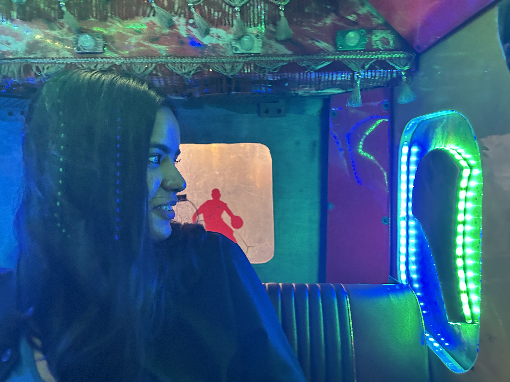

Project Finding Spaces was founded by Sanchita Aggarwal in 2022.
Lawyer · Researcher · Writer · Artist
Finding my vision as a lawyer studying law and conflict with an interest in human rights, art, intellectual property, political movements, while also unfolding my additional identity as an artist, I understood the world of art through a different perspective: I understood where trauma lies and how conflicts undo and inform reality. It is the art and objects which hold memory, and hold the (real) reality in front of all.
There is a saying that history is written by the victors. Across time, we do not know so many stories and never might, but it is art which brings us closer to them. It captures human moments and emotions, allowing one to see or imagine how even a bystander may be feeling. It is art which acts as a continuing source of inspiration, information, survival, existence, suffering, joy, public memory and anything else which may have been.
It holds stories and it witnesses. It also compels us to question more, to wonder why, and to explore. Both making and preserving art is an act of power, one which is on the side of humanity. And through Project Finding Spaces, I hope to find and bring exactly that to the forefront: more stories and art, rooted in this feeling. I hope to have more people join in and for this to become an interactive community project with time.